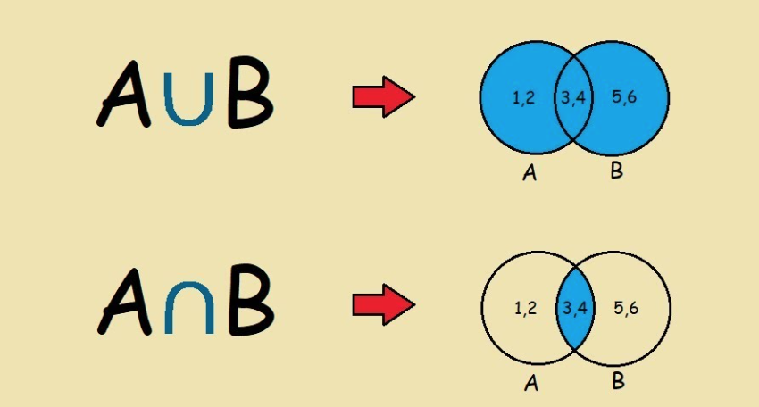
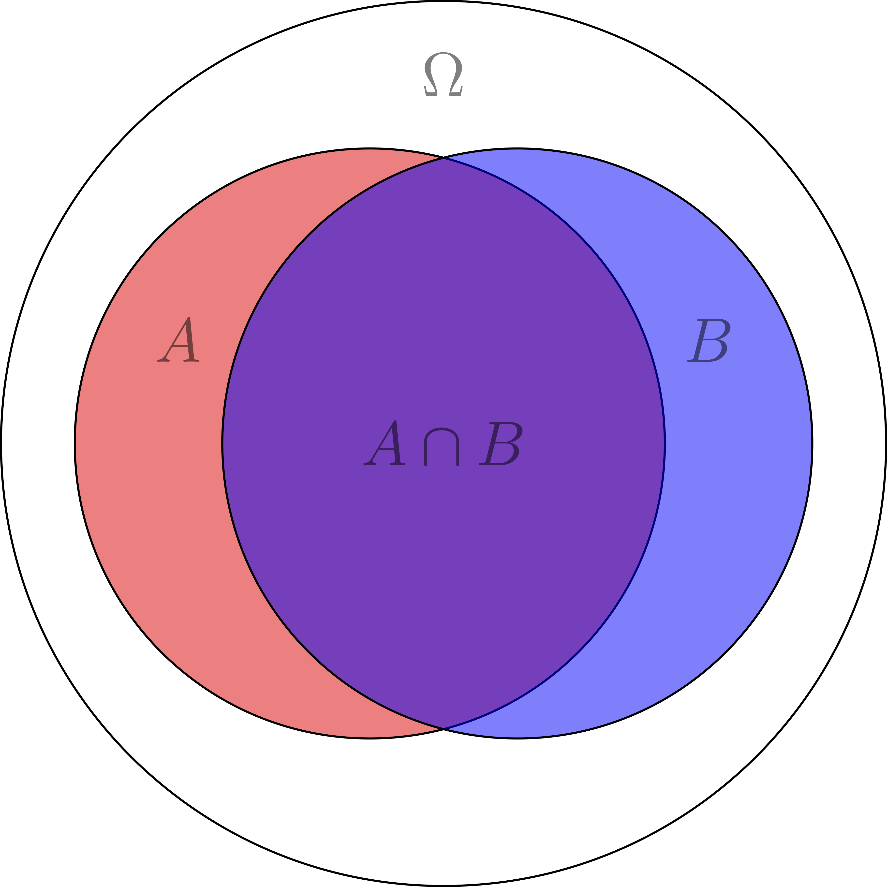

Chapitre 1
Contents
Chapitre 1#
Concepts de statistique en physique expérimentale#
La place des statistiques en physique expérimentale#
On peut construire des équations ou des modèles mathématiques pour préduire des évènements naturels qui nous entourent.

On a des modèle prédictif pour prédire un grand nombre de phénomènes avec moins de paramètres.
Dans ce cours on confronte les observations avec les prédictions de théories.
Population, probabilité et échantillon#
Expérience aléatorie
Processus qui va donner des résultats imprévisibles à l’avance.
Univers et évènements
On considère 4 exemples:
Dé à 6 faces:
L’univers des possibles est l’ensemble des nombres entiers de 1 à 6.
Une pièce
L’univers des possibles sont ‘pile’, ou ‘face’ ou ‘tranche’.
Si la pièce a une tranche très fine, l’univers des possibles est soit ‘pile’, soit ‘face’.
Nombres entiers \(N\)
On aurait l’univers des possibles l’ensemble des entiers naturels \(N\).
Objet en l’air
L’univers des possibles dépend de comment on peut mesurer l’objet, par exemple sa vitesse, son énergie, etc.
{kind=link}
{kind=link}
Note
Image prise de: https://www.alamy.es/
Qu’est-ce que c’est un évènement
À partir d’une expérience, un évènement est un proposition sur le résultat de cette expérience, il peut être vrai ou faux.
D’après les exemples on peut dire:
Dé à 6 faces: L’évènement peut-être
3par exemple, alors la proposition est vraie si le résultat est3, et fausse si c’est une autre valeur.De même si on dit: ‘la pièce va tomber sur
pile’, alors la proposition est vraie si estpileest fausse dans d’autres valeus.Dans le cas de l’objet qui tombe, on peut définir l’évènement comme valeurs maximales ou minimales ou moyennes par rapport aux mesures définies.
Note
Notation:
Pour un évènement \(\mathcal{A}\)
L’ensemble des éléments de vrais sont notés par \(A\)
L’ensemble des éléments de faux sont notés par \(\overline{A}\)
Probabilité
Échantillon: ensemble des résultats obtenus. Par exemple si on lance la pièce 5 fois on obtient : {
pile,pile,face,pile,face}. Et si on lance à nouveau, on trouverait des valeurs differents.
La probabilité d’un valeur \(x\) est:
où, \(n(x)\) le nombre d’occurence de \(x\) parmi \(N\).
La définition de probabilité comme fréquence d’apparition d’un résultat d’une expérience est uniquement possible pour des expériences qui sont répétables.
D’après on peut s’en servir des données ou des évènements qui sont passés comme par exemple prendre des valeurs météorologiques pour préduire au future la météo.
Définition ensembliste et propriétés des probabilités#
En 1933, Andrey Kolmogorov publie un livre intitulé: ‘Foundations of the Theory of Probability’, qui en générale prendre la probabilité comme des ensembles et axiomes.
On fait un petit rappel des ensembles en mathématiques:
{kind=link}
Note
Image prise de: https://www.youtube.com/watch?v=sdflTUW6gHo
Par exemple:
Supposons deux évènements \(\mathcal{A}\) et \(\mathcal{B}\).
L’ensemble des éléments de vrais sont notés par \(A\)
L’ensemble des éléments de faux sont notés par \(\overline{A}\)
De même on peut trouver la probabilité entre les évènements \(A\) \(ou\) \(B\) (\(\cup\)). Ainsi qu’entre \(A\) \(et\) \(B\) (\(\cap\)).
La probabilité est dans ce cas:
On a une valeur de probabilité entre 0 et 1 $\( 0 \leq P(A) \leq 1 \)$
On suppose que \(P(\omega) = 1\) car on peut avoir un évènement qui est toujours vrai, ainsi qu’un autre qui est toujours faux (on le néglige).
ce qui peut s’éxpliquer d’une façon plus simple dans l’image suivante:
{kind=link}
D’après cette illustration, on peut concluire:
Si \(P(\omega)=1\), on peut dire \(A \cup \overline{A} = \omega\)
\(A \cap \overline{A} = \omega\)
\(P(A \cup B) = P(A) + P(B) - P(A \cap B)\)
\(P(A \cup B) \leqq P(A) + P(B)\)
Note
Verifiez l’exercice 1
Probabilité conditionnelle et théorème de Bayes
Il est très souvent que l’on ait besoin de connaître la probabilité d’un évènement \(A\) sachant que l’on sait que l’évènement \(B\) a eu lieu. On appelle cette probabilité la probabilité conditionnelle de \(A\) sachant \(B\) et on la note \(P(A|B)\).
On peut définir la probabilité conditionnelle comme: $\( P(A|B) = \frac{P(A \cap B)}{P(B)} \)\( où \)P(B) \neq 0$.
Dans ce cas on es restreint donc à un sous-ensemblre \(\Omega '\). De même, ces types de probabilités respectent aussi les règles des axiomes définies par Kolmogorov, et donc on peut déduire:
et $\( P(B \cap A) = P(B|A)P(A) \)$
Pour en déduire le théorème de Bayes: $\( P(B|A)=\frac{P(A|B)P(B)}{P(A)} \)\( Il est importante à remarquer que cette relation permet de calculer les probabilités conditionnelles de deux évènements \)A\( et \)B$.
S’il y a un système des évènements \(B_1, B_2, \dots, B_n\), alors on peut définir la probabilité conditionnelle de \(B_i\) sachant \(A\) comme: $\( P(B_i|A) = \frac{P(A|B_i)P(B_i)}{\sum _{i=1}^N P(A|B_i)P(B_i)} \)$
Évènements indépendants
Deux évènements \(A\) et \(B\) sont indépendants si et seulement si: $\( P(A \cap B) = P(A)P(B) \)\( c'est-à-dire quelque soit le résultat de \)B\(, la probabilité de \)A\( ne change pas, c'est-à-dire \)P(A|B)=P(A)$
Par exemple, si on lance un dé, le résultat de change lance ne dépend pas du résultat de la lance précédente.
Quelle est la probabilité d’obtenir un 6 sachant que le résultat de la lance précédente était un 6?
On prendre la deuxième lance comme l’évènement \(B\) et la première comme l’évènement \(A\). On a donc:
Quelle est la probabilité d’obtenir deux 6 consécutifs?
Note
Verifiez l’exercice 2